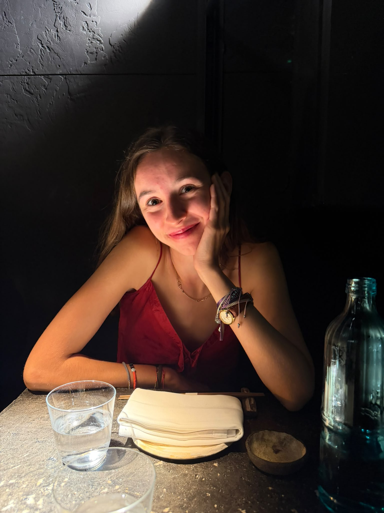

Aquí comença
el teu primer capítol.
Fa no tant eres la noia que dubtava si això se li donaria bé.
I mira't ara: a un despertador de distància de la teva primera classe de universitat.
Has arribat fins aquí a pols, carregant amb els teus dubtes i venint igual.
Això ja diu de tu més que qualsevol nota que treguis.
Aquests discos han sonat en les nits bones i en les que no tant.
Avui sumen una cançó més: la del teu primer dia.

Aquesta no és l'orla de la teva graduació. Aquesta vindrà, i també hi seré.
Aquesta és la d'avui: el dia que vas començar.
Estic molt orgullós de tu, Núria. Més del que sé dir sense que soni a frase feta.
Estaràs increïble.
Molta sort a la teva
classe de les 10h.
Vés, aprèn, i si t'equivoques, millor. Això també és part del capítol. Aquest és només el primer.
amb tot el meu orgull, Alex
PRIMER DIA · CAPÍTOL 1 · FI